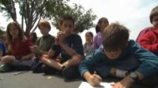
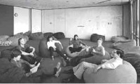
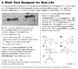
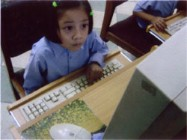
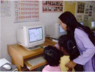
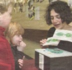
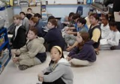

Read about Etoys in this collection of articles written by its advocates.
Articles |
|
|
||||||||
| ||||||||
Authoringby Alan Kay

Squeak is a project by some of the original pioneers of personal computing and networking, joined by enthusiastic more recent colleagues, to get wide spectrum authoring for all back into the mainstream of computing. We hope you enjoy it!
(more) |
Background On How Children Learnby Alan Kay
Math and Science literacy has been devalued in our schools, or at best inappropriately taught. And yet it's vital, not just for vocational reasons, but to develop critical thinking skills needed by all world citizens. Based on a constructivist learning model, Squeak school examples show surprising ways of reaching math and science resistance and helping children develop powerful thinking skills.
(more) |
The Power of Contextby Alan Kay

In his remarks to the National Academy of Engineering in acceptance ot the Charles Stark Draper Prize, Alan stated that, "The ARPA/PARC research context and community catalyzed researchers to be incredibly better dreamers and thinkers. This context was itself a great work of art, confirmed by the world-changing results that appeared so swiftly, and almost easily."
(more) |
Our Human Condition "From Space" (PDF only)by Alan Kay
Originally published in: Powerful Ideas in the Classroom, by B.J. Allen Conn and Kim Rose, Viewpoints Research Institute, Inc., 2003, Afterword
|
FACE to FACE: Alan Kay Still Waiting for the RevoultionInterview by Lars Kongshem
Since inventing much of the technology behind personal computing in the late 1960s, Alan Kay has dedicated his work to developing better learning environments for children. Now a senior researcher at HP and the president of Viewpoints Research Institute, Kay is launching Squeak, a multimedia authoring tool that allows children to construct dynamic simulations of real-world phenomena. We spoke with him about the unfulfilled promise of technology in schools-and about what computers have in common with pianos.
(more) |
The Last Time You Thought Clearly Was...by Alan Kay

A rebuttal to an article about mathematics from the Sunday New York Times, Sunday, Dec 12th 2004.
(more) |
The Dynabook RevisitedA Conversation with Alan Kayby "The Book & The Computer"
When you sit down at your computer to access this site -- moving your mouse to point and click at an icon that opens a window -- you owe a debt of gratitude to Alan Kay. These actions are second nature for us today and it's difficult to imagine that this wasn't always how we used computers.
(more) |
Squeak Etoys Authoring (PDF only)by Alan Kay

Squeak Etoys was inspired by LOGO, PARC-Smalltalk, Hypercard, and starLOGO. It is a media-rich authoring environment with a simple powerful scripted object model for many kinds of objects created by end-users that runs on many platforms, and is free and open source. It includes 2D and 3D graphics, images, text, particles, presentations, web-pages, videos, sound and MIDI, etc. It includes the ability to share desktops with other Etoy users in real-time, so many forms of immersive mentoring and play can be done over the Internet. It is multilingual, runs on more than 20 platforms bit-identically, and has been successfully used in USA, Europe, South America, Japan, Korea, India, Nepal, and elsewhere. See companion article Squeak Etoys Children & Learning.
|
Squeak Etoys, Children, and Learning (PDF only)by Alan Kay

Squeak Etoys was inspired by LOGO, PARC-Smalltalk, Hypercard, and starLOGO. It is a media-rich authoring environment with a simple powerful scripted object model for many kinds of objects created by end-users that runs on many platforms, and is free and open source. It includes 2D and 3D graphics, images, text, particles, pres-entations, web-pages, videos, sound and MIDI, etc. It includes the ability to share desktops with other Etoy users in real-time, so many forms of immersive mentoring and play can be done over the Internet. It is multilingual, runs on more than 20 platforms bit-identically, and has been successfully used in USA, Europe, South America, Japan, Korea, India, Nepal, and elsewhere. See companion article Squeak Etoys Authoring.
|
How We Learnby Alison Gopnik

Everything developmental psychologists have learned in the past 30 years points in one direction - children are far, far smarter than we would ever have thought.
(more) |
SQUEAK if You Love GUIby Jeff Read of World Tech Tribune (09/06/2002)
The programming environments that are available are often goal-directed, with steep learning curves, and do not encourage the exploration and discovery that is at the heart of many people's interest in programming. Enter Squeak...
(more) |
School Squeaking(Squeak News, Volume 1, Issue 4, October 2001)by Cathleen Galas
Squeak can serve students and teachers as a powerful tool to amplify learning. Kids can construct their own deep understanding of big ideas as they interact with objects in Squeak.
(more) |
Computers, Networking, and Education (PDF only)reprinted from Scientific Americanby Alan Kay

Computers can amplify yearnings in ways even more profound than can musical instruments. But if teachers do not nourish the romance of learning and expressing, any external mandate for a new "literacy" becomes as much a crushing burden as being forced to perform Beethoven's sonatas while having no sense of their beauty.
|

|
Website contents under a Creative Commons license. Privacy Policy Site Map |